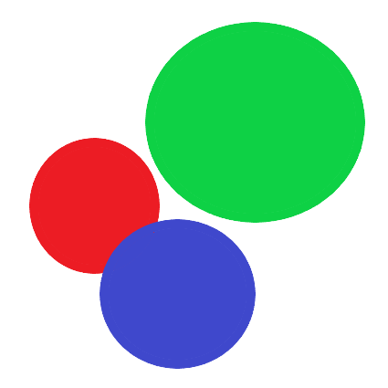

NOVA IGRA
Lagano
Normalno
Teško
UPUTE
O PROJEKTU
Dobrodošli u igricu
KRUŽIĆI
.

Pravila igre:
Na početku igre generiše se kružić na sredini platna
Igra počinje kada u platnu pomjerite miš
Kružić prati kretanje vašeg miša
Van platna se istovremeno generišu sporedni kružići te kreću se prema platnu različitim brzinama
Ukoliko glavni kružić dodije sporedni kružić manje veličine, tada se glavni kružić i broj bodova povećavaju
Ukoliko glavni kružić dodije sporedni kružić veće veličine, tada igra završava
Pobjeda se ostvaruje ako je glavni kružić veći od platna
Ukoliko glavni kružić dodije
specijalni
kružić dešava se jedan od sljedeća 4 scenarija:
Brzina kretanja sporednih kružića se poveća duplo u narednih 10 sekundi
Glavni kružić postaje duplo veći
Glavni kružić postaje duplo manji
Smjer kretanja sporednih kružića se mijenja
O projektu
Predmet: Web programiranje
Profesor: prof. dr. Elmedin Selmanović
Asistent: dr. Sead Delalić
Studij: Teorijska kompjuterska nauka
Fakultet: Prirodno-matematički fakultet Sarajevo
Naziv projekta: Kružići
Podaci o autoru:
Ime i prezime: Edin Smajić
Broj telefona:
+38761075705
Email adresa:
smajic.edin.7@gmail.com